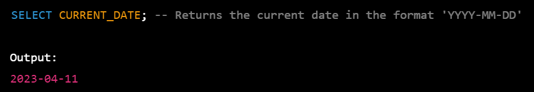

In SQL, dates are complicated for newbies, since while working with a database, the format of the data in the table must be matched with the input data to insert. In various scenarios instead of date, datetime (time is also involved with date) is used.
For storing a date or a date and time value in a database,MySQL offers the following data types:
DATE format YYYY-MM-DD
DATETIME format: YYYY-MM-DD HH:MI: SS
TIMESTAMP format: YYYY-MM-DD HH:MI: SS
YEAR format YYYY or YY
Rollback;
